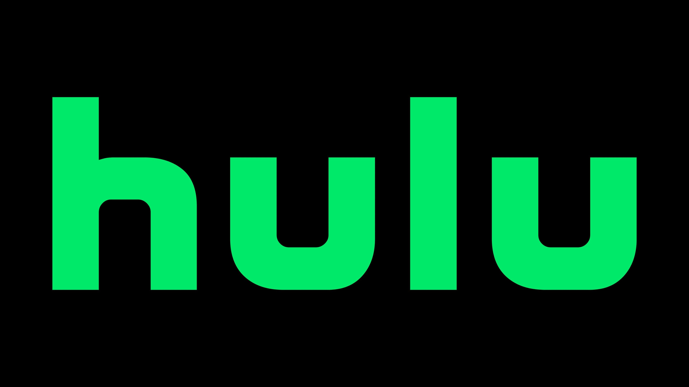
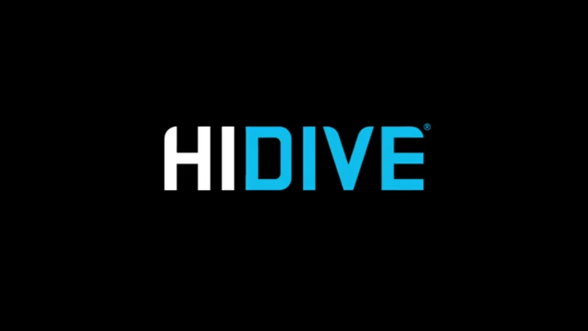

CRUNCHYROLL
Crunchyroll is the world’s leading subscription video-on-demand streaming service dedicated entirely to anime, East Asian dramas, and music videos. Owned by Sony Pictures Entertainment, the platform offers a massive library of over 1,000 localized titles with both subtitled and dubbed options. A key draw for its 21 million global subscribers is its "simulcast" feature, which broadcasts new episodes shortly after their Japanese release. Beyond streaming via its mobile, console, and smart TV apps, Crunchyroll serves as a cultural hub by hosting the annual Crunchyroll Anime Awards and operating an integrated e-commerce store for fans.

NETFLIX
Netflix positions itself as a premier, mainstream competitor in the anime space by focusing on high-budget exclusive originals, global localization, and casual viewer appeal. While it lacks the sheer volume and weekly "simulcast" speed of Crunchyroll, Netflix excels by funding massively popular, cinematic hits like Cyberpunk: Edgerunners and securing exclusive rights to legacy catalogs like Studio Ghibli. The platform typically drops entire seasons at once in dozens of languages simultaneously, making it ideal for binge-watching, though hardcore fans occasionally criticize this model for delaying weekly episodic releases. Ultimately, an anime selection on Netflix serves as an excellent, highly curated entry point for general audiences, bundled alongside the platform's broader live-action library.

HULU
Hulu serves as an excellent middle-ground platform for anime by anchoring its selection around mainstream blockbusters, high-profile exclusives, and strong English dub options. While its catalog lacks the massive, deep-cut volume of Crunchyroll, Hulu secures major exclusive US streaming rights for giant titles like Bleach: Thousand-Year Blood War and houses popular hits like Jujutsu Kaisen. Integrated under its "Animayhem" hub, anime sits alongside major Western adult animation, making a Hulu Subscription highly valuable for general animation fans. However, the platform faces periodic catalog shrinkage as older licenses expire, and it generally lacks the rapid, comprehensive weekly seasonal updates found on dedicated anime services.

HIDIVE
HIDIVE is a dedicated, budget-friendly anime streaming service owned by AMC Networks that caters strictly to enthusiast and niche anime fans. While its curated library of approximately 500 titles is significantly smaller than Crunchyroll's massive catalog, HIDIVE carved out a loyal following by securing highly sought-after exclusive seasonal simulcasts, including massive breakout hits like Oshi no Ko, The Eminence in Shadow, and Chained Soldier. The platform distinguishes itself by heavily featuring home-video editions, uncensored versions of specific titles, a robust selection of English dubs, and classic legacy series distributed by its sister licensing company, Sentai Filmworks. Available as a standalone platform or as an integrated add-on via Amazon Prime Video Channels, a HIDIVE Subscription provides a highly focused, cost-effective streaming experience meant to complement broader platforms like Crunchyroll or Netflix